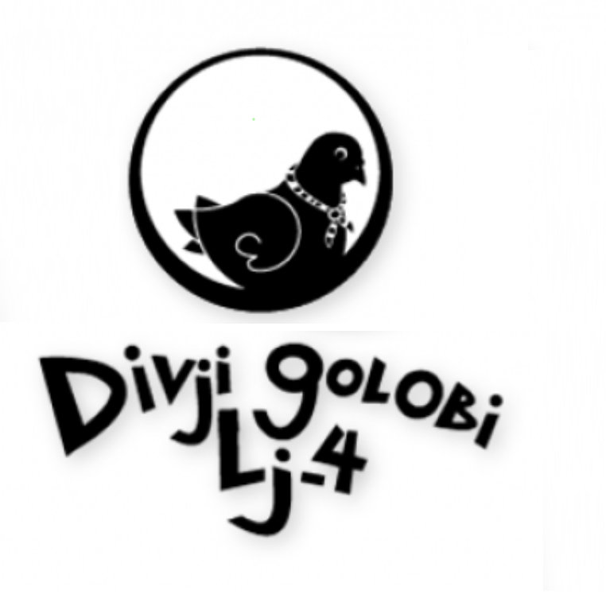

GRANOLA

granola |
|---|
SADNO-ŽITNA HRUSTLJAVA ENERGIJSKA PLOŠČICA |
| SESTAVINE: |
| OVSENI KOSMIČI, MANDLJEVI LISTIČI, KOKOSOVA MOKA, TEMNA ČOKOLADA, SUHO SADJE, MED, MASLO, RJAVI SLADKOR, SONČNIČNA SEMENA, BUČNA SEMENA, SOL |
| MASA: |
| cca. 70 g (2x po 35 g) |
| ROK UPORABNOSTI: |
| 13. 7. 2021 |
| SHRANJEVANJE: |
| V TEMNEM, SUHEM IN HLADNEM PROSTORU |